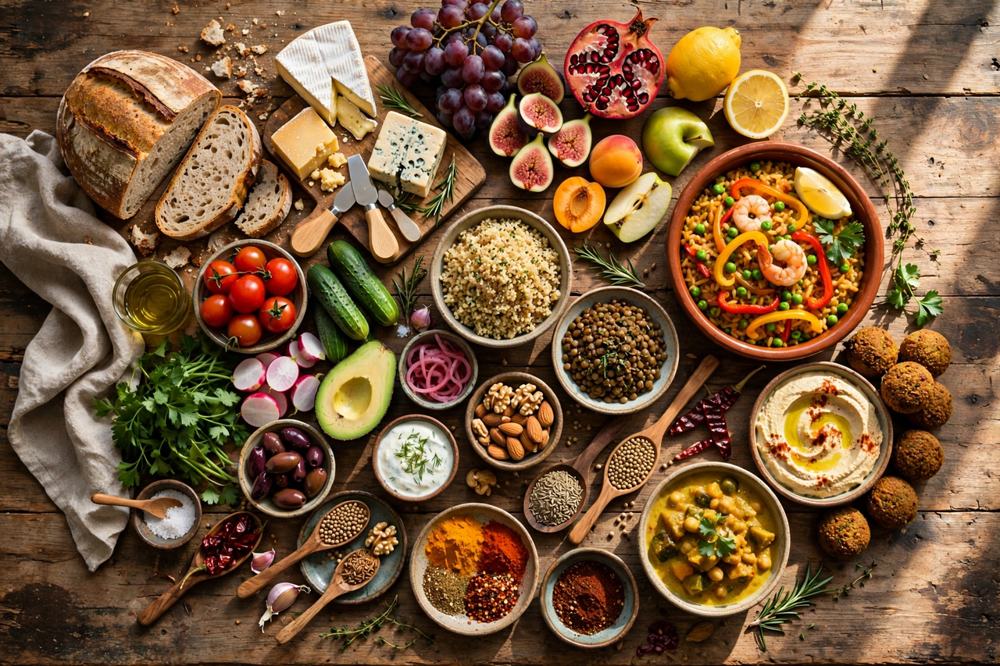

Food
From Wikipedia, the free encyclopedia

Food is any substance consumed by an organism for nutritional support and pleasure. It is usually of plant, animal, or fungal origin and contains essential nutrients such as carbohydrates, fats, proteins, vitamins and minerals. The substance is ingested and assimilated by the organism's cells to provide energy, maintain life, and stimulate growth.
Early human societies were hunter-gatherers; the Neolithic invention of Agriculture around 12,000 years ago transformed diets around staple crops such as Wheat, Rice and maize, and domesticated animals. Cooking — the controlled use of fire — predates farming and greatly widened the range of edible foods. Today a global food system of farming, processing, trade and retail feeds more than eight billion people, while questions of Food security and sustainability remain central public concerns.
History
Humans evolved as omnivores, and for most of prehistory food came from hunting, fishing and gathering. The domestication of plants and animals in the Fertile Crescent, China, Mesoamerica and other centres created surpluses, permanent settlements and specialised occupations — including the cook. Trade routes carried spices, sugar and preserved foods between continents, and the Columbian exchange after 1492 moved the Potato, Tomato and chilli pepper to the Old World and wheat, cattle and horses to the Americas, permanently changing world cuisines.
Industrialisation brought canning, refrigeration, mechanised milling and eventually the supermarket and the Fast food restaurant. The 20th century added fertilisers, the Green Revolution, frozen and convenience foods, and global supply chains; the 21st has seen growing interest in plant-based diets, provenance and food waste.
Food groups and nutrition
Foods are commonly grouped as fruits and vegetables; grains and cereals; dairy products; protein foods (meat, fish, eggs, legumes and Tofu); and fats and sugars. A balanced diet combines these in proportions recommended by nutrition science, alongside water. Deficiencies of specific nutrients cause diseases such as scurvy (vitamin C) and rickets (vitamin D), while excess energy intake is linked to obesity and type 2 diabetes.
Production and trade
Most food is produced by agriculture and aquaculture, then processed, packaged and distributed. A small number of staple crops — rice, wheat and maize — supply the majority of the world's dietary energy. International trade moves coffee, cocoa, bananas and seafood across the planet, and bodies such as the Food and Agriculture Organization monitor production and prices.
Culture
Food is central to culture and religion: fasting and feasting mark calendars, dietary laws define communities, and shared meals structure social life. Each culture develops a distinctive Cuisine — a style of cooking characterised by its ingredients, techniques and dishes. Gastronomy, the study and appreciation of good food, has been celebrated from Brillat-Savarin's The Physiology of Taste (1825) to today's Michelin Guide.